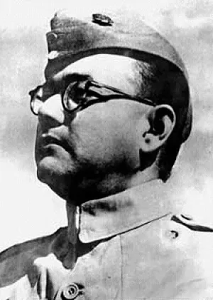

Subhas Chandra Bose
- Netaji Subhash Chandra Bose, the very name evokes a sense of unyielding
patriotism and indomitable spirit in the annals of Indian history.
-
Netaji Subhash Chandra Bose date of birth is 23rd of January 1897,
Netaji Subhash Chandra Bose birth place was Cuttack.
-
Netaji Subhash Chandra Bose was bornto Janakinath Bose and Prabhavati Dutt.
-
Netaji Subhash Chandra Bose was an Indian nationalist in the era of British colonialism in
India whose defiant patriotism and immovable nerve and bravery made
him a national hero whose praises are still sung with pride by every
Indian citizen.
For more information, click SC Bose